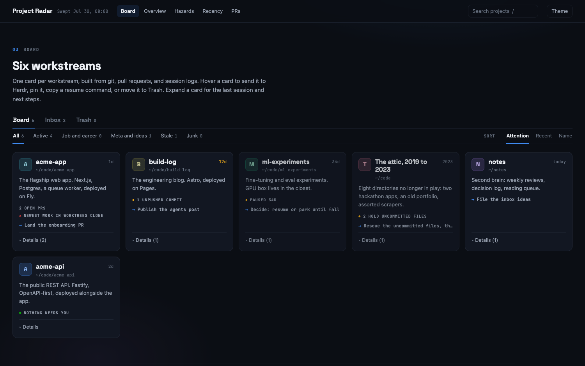

Mission Control
A project board that builds itself from your git checkouts, pull requests, and Claude Code sessions. For solo developers running more projects than they can keep in their head. There is nothing to update by hand, so the board stays true.

Who it is for
You work on several projects at once, some of them in more than one clone. You lose track of which checkout holds the newest work, which pull requests are still open, and what the last Claude Code session on a project actually did.
Mission Control answers those questions from data your tools already write. Any board you have to maintain by hand goes stale within a week; this one is regenerated on every sweep.
What it does
Sweeps instead of asking you to type
sweep.js scans every checkout under your roots for freshness, dirty files, unpushed commits, and satellite clones that hold newer work than the main one. It adds your open PRs from gh, the latest Claude Code session per project, and open issues from an inbox repo.
Launches Claude from a card
Hover a card and press the ram. The local server opens a herdr workspace for that project, starts Claude in a fresh pane, and hands it a prompt built from the card. Dots on each card show that workspace's agent state: working, blocked, or done.
One card per workstream
Views for Overview, Hazards, Recency, and PRs. Pin, search, and sort. Deleted cards stay deleted across sweeps.
Refreshes when a session ends
A Claude Code SessionEnd hook records what the session did, the server re-sweeps, and open boards reload. A daily sweep and a Sweep button cover the rest.
Ideas from your wrist
An Apple Watch Shortcut files dictated ideas as GitHub issues in a private inbox repo. They show up in the Inbox tab.
How it works
Three small scripts over data you already produce.
Observe: sweep.js
Reads git, gh, and Claude Code session logs, then rewrites only the marker-delimited regions of board.html. Styling, interactions, and your hand-written notes are left alone. It also writes a terminal BOARD.md and data.json.
Intend: scribe.js
Runs on Claude Code's SessionEnd hook and writes status/<project>.json: the session's prompts, files touched, and a summary. The sweeper folds that into the cards; the server treats it as a sign that work happened.
Act: server.js
Serves the board on 127.0.0.1 only and exposes /api/sweep and /api/launch. Launch drives herdr: create the workspace if it is missing, open a new tab, start claude, send the prompt.
Install
Needs macOS, Node 18+, git, and gh signed in. Optional: herdr for card launches, an Apple Watch for the inbox.
Then describe your world in config.json: the directories to scan, one entry per project card, your GitHub user, and the inbox repo. The README covers the config keys, running the server under launchd, the Dock app, and the scribe hook.
Status
- No tagged releases. Install from the
mainbranch. - macOS only. The install steps, the launchd setup, and the Dock app all assume a Mac.
- CI is smoke-level. It checks that the engine and the board's inline script parse, runs the engine unit tests, and runs a dry sweep against the example config.
- Next on the roadmap: voice inbox v2, which records audio offline and transcribes it on your Mac. It is specced, not built.
- Keep the server on loopback.
/api/launchruns commands, so it binds to127.0.0.1and must never be exposed on another interface. - Not affiliated with herdr. The integration drives the public
herdrCLI. Without herdr, everything works except the launch button.